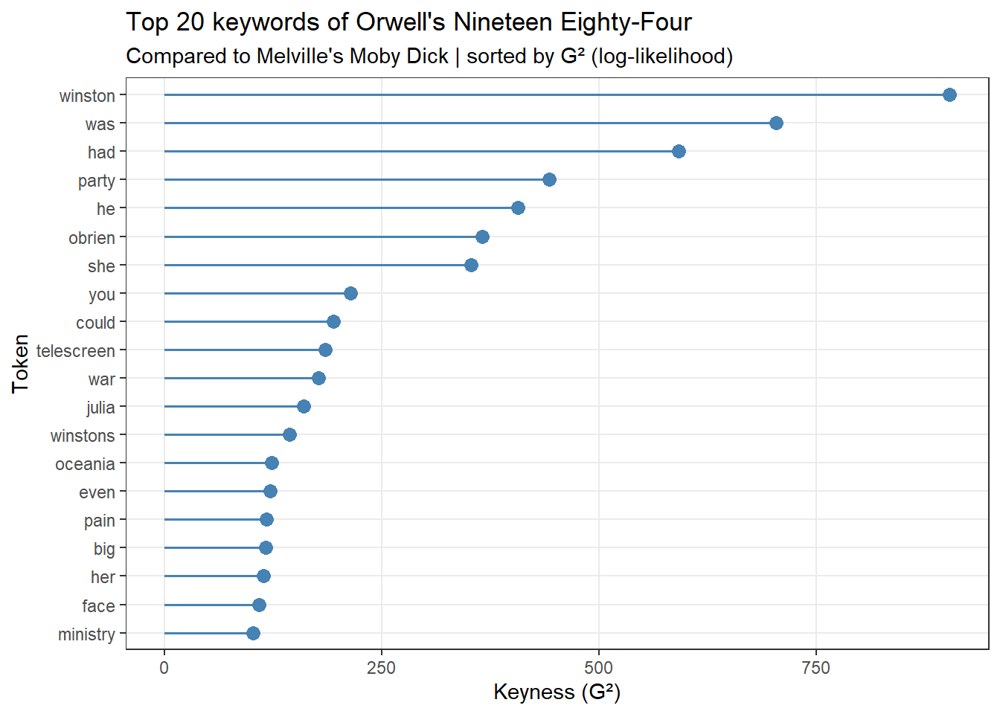

This tutorial introduces keyness and keyword analysis — a set of corpus-linguistic methods for identifying words that are statistically characteristic of one text or corpus when compared to another. Keywords play a pivotal role in text analysis, serving as distinctive terms that hold particular significance within a given text, context, or collection. These words stand out due to their heightened frequency in a specific text or context, setting them apart from their occurrence in another. In essence, keywords are linguistic markers that encapsulate the essence or topical focus of a document or dataset. The process of identifying keywords involves a methodology akin to the one employed for detecting collocations using kwics: we compare the use of a particular word in a target corpus A against its use in a reference corpus B. By discerning the frequency disparities, we gain valuable insights into the salient terms that contribute significantly to the unique character and thematic emphasis of a given text or context.1
This tutorial is aimed at beginners and intermediate users of R with the aim of showcasing how to extract keywords from and analyze keywords in textual data using R. The aim is not to provide a fully-fledged analysis but rather to show and exemplify selected useful methods associated with keyness and keyword analysis.
Learning Objectives
By the end of this tutorial you will be able to:
Explain what a keyword is and how keyness analysis differs from simple frequency analysis
Describe the dimensions of keyness proposed by Egbert and Biber (2019) and Sønning (2023) — frequency vs. dispersion, and target-intrinsic vs. comparative
Construct the 2×2 contingency table that underlies all keyness statistics
Compute a comprehensive suite of keyness measures in R — G², χ², phi, MI, PMI, Log Odds Ratio, Rate Ratio, Rate Difference, Difference Coefficient, Odds Ratio, DeltaP, and Signed DKL
Apply Fisher’s Exact Test and Bonferroni correction to assess and control for statistical significance
Visualise keyword results using dot plots, bar plots, and comparison word clouds
Interpret types (overrepresented words) and antitypes (underrepresented words) substantively
Report keyword analyses in accordance with best-practice conventions in corpus linguistics
Prerequisite Tutorials
To be able to follow this tutorial, we suggest you check out and familiarise yourself with the content of the following tutorials:
Familiarity with basic frequency analysis and with the concept of statistical significance testing will be particularly helpful for understanding the keyness statistics introduced in this tutorial.
Citation
Martin Schweinberger. 2026. Keyness and Keyword Analysis in R. The Language Technology and Data Analysis Laboratory (LADAL), The University of Queensland, Australia. url: https://ladal.edu.au/tutorials/keywords/keywords.html (Version 3.1.1). doi: 10.5281/zenodo.19332896.
library(checkdown) # interactive quiz questionslibrary(flextable) # formatted tableslibrary(Matrix) # sparse matrix supportlibrary(quanteda) # corpus and tokenisation toolslibrary(quanteda.textplots) # word clouds and text visualisationslibrary(dplyr) # data manipulationlibrary(stringr) # string processinglibrary(tidyr) # data reshapinglibrary(tm) # stopword listslibrary(ggplot2) # data visualisation
Research question
How can you detect keywords — words that are characteristic of a text or a collection of texts?
This tutorial aims to show how you can answer this question.
Keywords
Section Overview
What you will learn: What keywords are, why they matter, and how keyword identification relates to frequency analysis.
Why it matters: Understanding the logic of keyness is essential before computing any statistics — knowing what a keyword is tells you how to choose the right measure and how to interpret the results.
Keywords play a central role in corpus linguistics and computational text analysis. In everyday language, the word keyword may mean simply an important or central word in a document. In corpus linguistics, however, the term has a more precise, comparative meaning: a keyword is a word whose frequency — or whose distribution — in a target corpus is statistically unusual compared to a reference corpus(Scott 1997; Stubbs 2010).
This comparative logic is fundamental. Consider the word whale: it will be extremely frequent in a corpus of whaling narratives (such as Melville’s Moby Dick) but far less common in dystopian fiction. Its relative excess in the whaling corpus is what makes it a keyword there — not its raw frequency per se, but its frequency relative to a baseline. The reference corpus serves as that baseline, providing an estimate of how often we would expect a given word to appear in text generally, against which we assess whether its occurrence in the target corpus is surprising.
The identification of keywords is used across a wide range of applications in linguistics and beyond, including:
Stylistic analysis — characterising an author’s distinctive vocabulary relative to contemporaries or a general corpus
Genre analysis — identifying what makes a genre lexically distinctive
Diachronic studies — tracking which words become more or less characteristic of a variety over time
Discourse analysis — revealing vocabulary associated with a particular social group or ideological position
Language pedagogy — identifying vocabulary that is key to a specific academic field or register
The reference corpus matters
The reference corpus is not a neutral backdrop — it shapes every keyword that emerges from the analysis. A study comparing academic writing to news prose will produce very different keywords than one comparing the same academic texts to spoken conversation. Always report what your reference corpus is, justify why it is the appropriate baseline for your research question, and interpret all keywords in light of that choice.
Dimensions of Keyness
Section Overview
What you will learn: The theoretical framework for understanding different types of keyness — frequency-based vs. dispersion-based, and target-intrinsic vs. comparative.
Key references:Egbert and Biber (2019); Sønning (2023)
Why it matters: Not all keyness measures capture the same property of language. Understanding the dimensions of keyness helps you choose the measure that best reflects your research question.
Before turning to the practicalities of computing keyness, it is worth considering what typicalness — the theoretical goal of keyness analysis — actually means. This question has received renewed attention in recent methodological work (Sønning 2023).
Keyness analysis identifies typical items in a discourse domain, where typicalness traditionally relates to frequency of occurrence: the emphasis is on items used more frequently in the target corpus compared to a reference corpus. Egbert and Biber (2019) expanded this notion by highlighting two distinct criteria for typicalness: content-distinctiveness and content-generalizability.
Content-distinctiveness refers to an item’s association with the domain and its topical relevance — how much more (or less) it is used in the target than in a reference corpus.
Content-generalizability pertains to an item’s widespread usage across various texts within the target domain — whether the word surfaces broadly or is concentrated in just a handful of documents.
These criteria bridge traditional keyness approaches with broader linguistic perspectives, emphasising both the distinctiveness and the generalizability of key items within a corpus.
Following Sønning (2023), we can adopt Egbert and Biber (2019)’s keyness criteria and distinguish between frequency-oriented and dispersion-oriented approaches to assess keyness. We can also distinguish between keyness features that are assessed relative to the target variety only (target-intrinsic) and those that emerge only from a comparison to a reference variety (comparative). This four-way classification, detailed in the table below, links methodological choices to the linguistic meaning conveyed by quantitative measures:
Analysis
Frequency-oriented
Dispersion-oriented
Target variety in isolation
Discernibility of item in the target variety
Generality across texts in the target variety
Comparison to reference variety
Distinctiveness relative to the reference variety
Comparative generality relative to the reference variety
The second key aspect of keyness involves an item’s dispersion across texts in the target domain, indicating its widespread use. A typical item should appear evenly across various texts within the target domain, reflecting its generality. This breadth of usage can be compared to its occurrence in the reference domain — termed comparative generality. Therefore, a key item should exhibit greater prevalence across target texts compared to those in the reference domain.
In this tutorial we focus primarily on the frequency-comparative quadrant: identifying words that are significantly more (or less) frequent in the target corpus than in the reference corpus. This is by far the most commonly implemented approach in corpus-linguistic research and the one found in tools such as AntConc, WordSmith Tools, and Sketch Engine. Dispersion-based approaches are an important complementary perspective but are beyond the scope of this introductory tutorial.
Exercises: Dimensions of Keyness
Q1. A word appears 800 times in a target corpus of 200,000 tokens, but it also appears very frequently in the reference corpus in proportion to its size. Is this word necessarily a keyword?
Q2. What is the difference between content-distinctiveness and content-generalizability as described by Egbert & Biber (2019)?
Identifying Keywords
Section Overview
What you will learn: The logical and mathematical structure of keyword identification — how the 2×2 contingency table works and what information it captures.
Why it matters: Every keyness statistic — from G² to MI to the Log Odds Ratio — is computed from this same table. Understanding it is the key to understanding all measures.
Here, we focus on a frequency-based approach that assesses distinctiveness relative to the reference variety. To identify these keywords, we follow the procedure used to identify collocations using kwics — the idea is essentially identical: we compare the use of a word in a target corpus A to its use in a reference corpus B.
To determine if a token is a keyword — whether it occurs significantly more frequently in a target corpus compared to a reference corpus — we use the following information arranged in a 2×2 contingency table:
O11 = Number of times wordx occurs in the target corpus
O12 = Number of times wordx occurs in the reference corpus (without target corpus)
O21 = Number of times other words occur in the target corpus
O22 = Number of times other words occur in the reference corpus
Target corpus
Reference corpus
Row total
token
O11
O12
= R1
other tokens
O21
O22
= R2
Column total
= C1
= C2
= N
From these observed counts we compute expected frequencies — the counts we would expect if wordx were distributed in exact proportion to the sizes of the two corpora (i.e., the null hypothesis of no keyness):
If the observed O11 substantially exceeds E11, the word appears more often in the target than chance would predict: it is a candidate keyword, also called a type. If O11 is substantially below E11, the word is underrepresented in the target: it is an antitype — a keyword of the reference corpus.
Types and antitypes
Both directions of keyness are substantively informative:
A type is a word used significantly more in the target corpus than expected — it characterises the target.
An antitype is a word used significantly less in the target corpus than expected — it characterises the reference corpus, or equivalently, is avoided in the target.
Antitypes can reveal what a text or genre systematically avoids saying, which is often as theoretically meaningful as what it uses abundantly. For example, if we compare political speeches to news reporting, words significantly avoided in speeches (antitypes) can illuminate strategic communicative choices.
Data: Two Literary Texts
Section Overview
What you will learn: How to load and inspect the two texts used as our target and reference corpora throughout this tutorial.
We begin with loading two texts. text1 is our target and text2 is our reference.
We inspect the first 200 characters of each text to confirm what we are working with:
substr(text1, start = 1, stop = 200)
1984 George Orwell Part 1, Chapter 1 It was a bright cold day in April, and the clocks were striking thirteen. Winston Smith, his chin nuzzled into his breast in an effort to escape the vile wind, sli
As you can see, text1 is George Orwell’s Nineteen Eighty-Four.
substr(text2, start = 1, stop = 200)
MOBY-DICK; or, THE WHALE. By Herman Melville CHAPTER 1. Loomings. Call me Ishmael. Some years ago—never mind how long precisely—having little or no money in my purse, and nothing particular to interes
The table shows that text2 is Herman Melville’s Moby Dick. These two novels are chosen because they are stylistically and thematically very different — one a mid-twentieth-century dystopian political novel, the other a nineteenth-century nautical adventure — which produces clear and interpretable keywords, making them ideal for illustrative purposes.
Computing Keyness Statistics
Section Overview
What you will learn: How to tokenise two texts, build frequency and contingency tables, and calculate a comprehensive suite of keyness measures in R — step by step.
Why it matters: Building the analysis from scratch means you understand exactly what each step does and can adapt it to your own corpora and research questions.
After loading the two texts, we create a frequency table of the first text (the target).
Code
text1_words <- text1 |># remove non-word characters stringr::str_remove_all("[^[:alpha:] ]") |># convert to lower casetolower() |># tokenize quanteda::tokens(remove_punct =TRUE,remove_symbols =TRUE,remove_numbers =TRUE ) |># unlist to a data frameunlist() |>as.data.frame() |> dplyr::rename(token =1) |> dplyr::group_by(token) |> dplyr::summarise(n =n()) |> dplyr::mutate(type ="text1")
Now, we create a frequency table for the second text (the reference).
In a next step, we combine the two frequency tables. We use a left join so that every word from the target corpus appears in the combined table, with a zero count assigned to words that do not appear in the reference corpus.
The table above shows the keywords for text1, which is George Orwell’s Nineteen Eighty-Four. The table starts with token (word type), followed by type, which indicates whether the token is a keyword in the target data (type) or a keyword in the reference data (antitype). Next is the Bonferroni-corrected significance (Sig_corrected), which accounts for repeated testing. This is followed by O11 (observed frequency of the token in the target corpus), and then by the various keyness statistics, which are explained in detail in the next section.
Exercises: Computing Keyness
Q1. In the keyword contingency table, what does O11 represent?
Q2. Why is a small offset (e.g., +0.1) added to zero-count cells before calculating keyness statistics?
Q3. What does it mean for a word to be an antitype in a keyword analysis?
Keyness Measures Explained
Section Overview
What you will learn: What each keyness statistic measures conceptually, its mathematical formula, and when it is most appropriate to use.
Why it matters: Different keyness measures capture different aspects of the relationship between a word and a corpus. Knowing what each one does allows you to make principled choices and report results accurately.
This section explains each of the statistics produced by the code above. Understanding these measures allows you to choose the most appropriate one for your research question and to interpret results correctly.
Delta P
Delta P measures the strength and direction of the association between a word and corpus membership through conditional probabilities:
\[\Delta P = \frac{O_{11}}{R_1} - \frac{O_{21}}{R_2}\]
Delta P ranges from −1 to +1 and is increasingly recommended in corpus-linguistic work (Gries 2013).
Log Odds Ratio
The Log Odds Ratio measures the strength of association between a word and the target corpus. It is the natural logarithm of the odds ratio and provides a symmetric measure. The +0.5 offsets (Haldane–Anscombe correction) handle zero-count cells:
Positive values indicate overrepresentation in the target; negative values indicate underrepresentation. The Log Odds Ratio is particularly attractive because it is symmetric, interpretable as an effect size, and amenable to confidence interval construction.
Mutual Information (MI)
Mutual Information quantifies the amount of information obtained about corpus membership through knowing the word:
MI is highly sensitive to low-frequency items: a word appearing only once or twice in the target but never in the reference will receive an extremely high MI score. It therefore tends to favour rare, highly specific words over more general but robustly frequent keywords. Use MI with a minimum frequency filter.
Pointwise Mutual Information (PMI)
Pointwise Mutual Information measures the association between the specific word and the target corpus as point-events:
Like MI, PMI is sensitive to low-frequency words. Both MI and PMI are better used as ranking or ordering metrics than as standalone significance tests.
Phi (φ) Coefficient
The phi coefficient is a scale-free effect size for the association between a word and corpus membership:
\[\phi = \sqrt{\frac{\chi^2}{N}}\]
Phi ranges from 0 (no association) to 1 (perfect association), and is signed here to indicate direction (positive = type, negative = antitype). Because phi is not influenced by sample size, it is valuable for comparing keyness strength across words or studies.
Chi-Square (χ²)
Pearson’s chi-square tests the independence of the word’s distribution from corpus membership:
\[\chi^2 = \sum \frac{(O_i - E_i)^2}{E_i}\]
It shares the same distributional logic as G² but is less robust when expected cell frequencies fall below 5 — which is common for rare words in large corpora. For most corpus-linguistic keyness applications, G² is preferred over χ².
Likelihood Ratio (G²)
The log-likelihood ratio statistic (G²) is the most widely recommended keyness measure in corpus linguistics (Dunning 1993). It compares how much better the data fit a model where the word has different rates in the two corpora versus a model assuming a single pooled rate:
G² follows an approximate chi-square distribution, making significance assessment straightforward. Unlike Pearson’s χ², G² performs well even when expected cell frequencies are low.
Rate Ratio
The Rate Ratio compares the per-thousand-word frequencies in the two corpora:
A Rate Ratio of 3.0 means the word appears three times more frequently per thousand words in the target than in the reference. It is intuitive and easy to communicate to non-specialist audiences.
Rate Difference
The Rate Difference measures the absolute difference in per-thousand-word event rates:
Values above 1 indicate overrepresentation in the target; values below 1 indicate underrepresentation. The log transformation (Log Odds Ratio, above) is usually preferred because it is symmetric around zero.
Log-Likelihood Ratio (LLR)
The LLR as implemented here is a simplified form that focuses on the target word’s contribution to the full G² statistic:
It is signed to indicate direction (positive = more frequent in target; negative = more frequent in reference).
Significance and multiple testing
All keyness statistics above measure association strength, but to determine whether a keyword is statistically significant we need a hypothesis test. The code uses Fisher’s Exact Test, which computes the exact probability of observing a contingency table as extreme as the one observed under the null hypothesis of no association.
Bonferroni correction for multiple testing
When testing thousands of words simultaneously, some will appear significant purely by chance. If we test 10,000 words at α = .05, we expect roughly 500 false positives even if no word is truly a keyword. The Bonferroni correction addresses this by dividing the significance threshold by the number of tests performed: αcorrected = α / k, where k is the number of word types tested.
Label
Meaning
p < .001***
p / k ≤ .001 — very strong evidence against H₀
p < .01**
p / k ≤ .01
p < .05*
p / k ≤ .05
n.s.
Not significant after Bonferroni correction — excluded from results
The Bonferroni correction is conservative (it increases the risk of false negatives alongside reducing false positives). An alternative that controls the False Discovery Rate (FDR) is the Benjamini–Hochberg procedure, which offers more statistical power at the cost of allowing a small proportion of false positives.
Exercises: Keyness Measures
Q1. Why might Mutual Information (MI) not be the best default measure for identifying keywords in a large corpus?
Q2. G² = 45.3 (p < .001, Bonferroni-corrected). What does this tell us?
Q3. A Rate Ratio of 0.15 for a word in a keyword analysis of text1 vs. text2 means:
Visualising Keywords
Section Overview
What you will learn: How to create and interpret three complementary visualisations of keyword results — dot plots, bar plots, and comparison word clouds.
Why visualisation matters: A table with thousands of rows of keyness statistics is difficult to scan; visualisations make patterns immediately communicable and allow you to identify the most important results at a glance.
Dot plot
We can visualise keyness strengths in a dot plot. Sorting by G² in descending order and selecting the top 20 types gives us the words most strongly characteristic of Orwell’s Nineteen Eighty-Four.
Code
assoc_tb3 |> dplyr::filter(type =="type") |> dplyr::arrange(-G2) |>head(20) |>ggplot(aes(x =reorder(token, G2, mean), y = G2)) +geom_point(color ="steelblue", size =3) +geom_segment(aes(xend = token, y =0, yend = G2),color ="steelblue", linewidth =0.7) +coord_flip() +theme_bw() +theme(panel.grid.minor =element_blank()) +labs(title ="Top 20 keywords of Orwell's Nineteen Eighty-Four",subtitle ="Compared to Melville's Moby Dick | sorted by G² (log-likelihood)",x ="Token", y ="Keyness (G²)" )

The dot plot shows that words like party, winston, telescreen, and thought are among the most distinctive terms in Nineteen Eighty-Four — words that encapsulate the novel’s preoccupation with totalitarian control, surveillance, and political conformity.
Bar plot
A bar plot can simultaneously show the top keywords for each text. We display the 12 strongest types (keywords of text1) and 12 strongest antitypes (keywords of text2) in a single panel, making the contrasting vocabularies of the two novels immediately apparent.
Bars extending to the right (blue) show the strongest keywords of Nineteen Eighty-Four; bars extending to the left (orange) show words characteristic of Moby Dick that are underrepresented in Orwell. The contrast is striking: Melville’s distinctive vocabulary (whale, ship, sea, ahab) reflects the nautical world of the novel, while Orwell’s keywords (party, winston, telescreen) evoke the dystopian political landscape of Nineteen Eighty-Four.
Comparison word clouds
Comparison word clouds are helpful for discerning lexical disparities between texts at a glance. They use a simplified algorithm and should be used for exploration or illustration rather than as primary evidence.
In a first step, we generate a corpus object and create a variable with the author name.
Comparison word clouds use a simplified keyness algorithm that does not apply multiple testing correction and does not distinguish between statistical significance and visual prominence. They should be used for exploration or illustration rather than as the primary or sole evidence for research claims. Always accompany word clouds with the full statistical keyword table, and report statistics (G², phi, etc.) for any keywords you discuss substantively.
Exercises: Visualising Keywords
Q1. In the bar plot of keywords and antitypes, what does a bar extending to the left (negative G²) represent?
Q2. Why are comparison word clouds considered a less rigorous method of keyword identification than the statistical approach demonstrated earlier?
Reporting Standards
Section Overview
What you will learn: What to report in a keyword analysis, a model reporting paragraph, a quick-reference table of keyness measures, and a reporting checklist.
Reporting keyword analyses clearly and completely is as important as conducting them correctly.
General principles
What to report in a keyword analysis
Corpus description
Describe both the target and reference corpora: their source, composition, size in tokens, and any relevant metadata (e.g., time period, genre, sampling frame)
State all preprocessing steps: tokenisation method, case normalisation, stopword removal, lemmatisation
Justify the choice of reference corpus relative to the specific research question
Statistical choices
Name the keyness measure(s) used and cite a methodological reference (e.g., G²: Dunning (1993))
State the significance test used (Fisher’s Exact Test or asymptotic chi-square approximation)
State whether and how you corrected for multiple testing (e.g., Bonferroni correction: αcorrected = .05 / k)
Report any minimum frequency thresholds applied before ranking
Results
Report the keyness statistic (G²), the Bonferroni-corrected significance level, and at least one effect size (phi, Log Odds Ratio, or Rate Ratio) for each keyword discussed in detail
Report both types and antitypes if they are relevant to the research question
Provide a full keyword table in the paper (or as supplementary material if space is constrained)
Interpret keywords substantively — connect them to the theoretical or linguistic claims of the study
Model reporting paragraph
To identify the lexical characteristics of Orwell’s Nineteen Eighty-Four relative to Melville’s Moby Dick, a keyword analysis was conducted using the log-likelihood statistic (G²; Dunning (1993)). Fisher’s Exact Test was used to assess statistical significance, with a Bonferroni correction applied to control for multiple comparisons across all word types tested (αcorrected = .05 / k). Only words reaching the corrected threshold of p < .001 are reported. Effect sizes are reported as phi (φ). The strongest keywords of Nineteen Eighty-Four included party (G² = [X], φ = [X], p < .001), winston (G² = [X], φ = [X], p < .001), and telescreen (G² = [X], φ = [X], p < .001), reflecting the novel’s preoccupation with political control and surveillance. Prominent antitypes — words significantly underrepresented in Nineteen Eighty-Four relative to Moby Dick — included whale and ship, consistent with the nautical thematic focus of the reference text.
Quick reference: keyness measures
Measure
Strengths
Use with caution when
G² (Log-Likelihood)
Robust for rare words; best general-purpose keyness test; widely used
Large N inflates significance — always pair with an effect size such as phi
chi-square
Widely known; same distributional logic as G²
Expected cell frequencies < 5 (use G² instead)
Phi
Scale-free effect size; comparable across words and studies; not N-inflated
Used alone — does not test statistical significance
MI (Mutual Information)
Highlights highly specific, narrowly targeted words
No frequency filter applied — strongly favours hapax legomena
PMI
Interpretable in information-theoretic terms
No frequency filter applied — also favours rare words
Log Odds Ratio
Symmetric; amenable to CIs; recommended effect size for keyness
Zero cells exist without Haldane correction (+0.5 offset needed)
Rate Ratio
Intuitive; easy to communicate to non-specialist audiences
Base rates in the two corpora differ greatly
Rate Difference
Shows absolute magnitude of frequency difference
Comparing across words with very different base frequencies
Difference Coefficient
Bounded [-1, +1]; accounts for base rate differences
Both rates are near zero (arithmetic instability)
Odds Ratio
Familiar from epidemiology; simple ratio
Asymmetric on raw scale — log transformation preferred
DeltaP
Bounded [-1, +1]; grounded in conditional probability
Less commonly reported; reviewers may be unfamiliar with it
Signed DKL
Information-theoretic; sensitive to distributional divergence
Implementation details vary across software — document formula used
Reporting checklist
Reporting item
Required
Target corpus described (source, size in tokens, composition)
Yes
Reference corpus described and choice justified relative to research question
Yes
All preprocessing steps reported (tokenisation, case, stopwords, lemmatisation)
Yes
Keyness measure named and a methodological reference cited
Yes
Significance test specified (Fisher's Exact Test or chi-square p-value)
Yes
Multiple testing correction applied and reported (Bonferroni or FDR)
Yes
Minimum frequency threshold stated (if applied before ranking)
Recommended
Both types and antitypes considered and discussed where relevant
Full keyword table provided or referenced as supplementary material
Yes
Keywords interpreted substantively in relation to the research question
Yes
Citation & Session Info
Citation
Martin Schweinberger. 2026. Keyness and Keyword Analysis in R. The Language Technology and Data Analysis Laboratory (LADAL), The University of Queensland, Australia. url: https://ladal.edu.au/tutorials/keywords/keywords.html (Version 3.1.1). doi: 10.5281/zenodo.19332896.
@manual{martinschweinberger2026keyness,
author = {Martin Schweinberger},
title = {Keyness and Keyword Analysis in R},
year = {2026},
note = {https://ladal.edu.au/tutorials/keywords/keywords.html},
organization = {The Language Technology and Data Analysis Laboratory (LADAL), The University of Queensland, Australia},
edition = {3.1.1}
doi = {10.5281/zenodo.19332896}
}
This tutorial was re-developed with the assistance of Claude (claude.ai), a large language model created by Anthropic. Claude was used to help revise the tutorial text, structure the instructional content, generate the R code examples, and write the checkdown quiz questions and feedback strings. All content was reviewed, edited, and approved by the author (Martin Schweinberger), who takes full responsibility for the accuracy and pedagogical appropriateness of the material. The use of AI assistance is disclosed here in the interest of transparency and in accordance with emerging best practices for AI-assisted academic content creation.
Dunning, Ted. 1993. “Accurate Methods for the Statistics of Surprise and Coincidence.”Computational Linguistics 19 (1): 61–74.
Egbert, Jesse, and Douglas Biber. 2019. “Incorporating Text Dispersion into Keyword Analyses.”Corpora 14 (1): 77–104.
Gries, Stefan Th. 2013. Statistics for Linguistics with R: A Practical Introduction. 2nd ed. Berlin: De Gruyter Mouton.
Scott, Mike. 1997. “PC Analysis of Key Words — and Key Key Words.”System 25 (2): 233–45.
Sønning, Lukas. 2023. “Keyword Analysis in Corpus Linguistics: Rethinking the Foundations.”Corpora 18 (2): 1–31.
Stubbs, Michael. 2010. “Three Concepts of Keywords.” In Keyness in Texts, edited by Marina Bondi and Mike Scott, 1–42. Amsterdam: John Benjamins.
Footnotes
I am extremely grateful to Joseph Flanagan, who provided very helpful feedback and pointed out errors in previous versions of this tutorial. All remaining errors are, of course, my own.↩︎